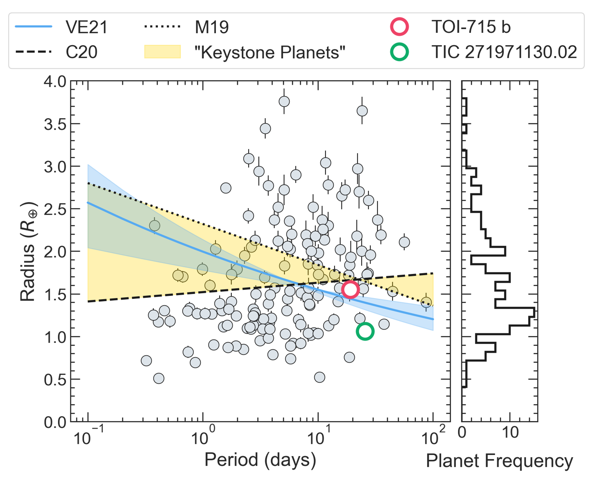
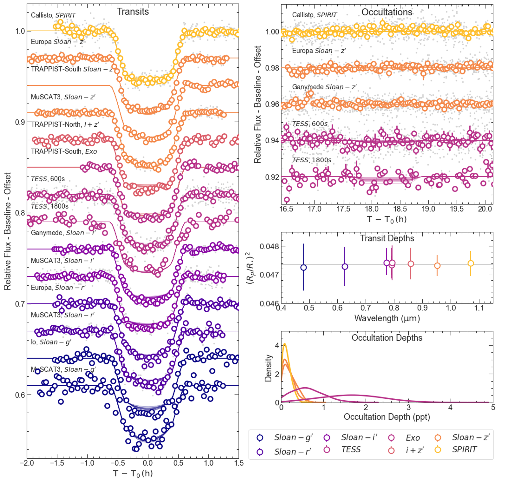

Discovery of TOI-715 b
A super-Earth orbiting a nearby M-dwarf
Read the paperStuff I'm working on - Bits I've worked on - Things I'm hoping to work on.
Currently, our best hope of finding habitable Earth-like planets lies in the search around stars significantly smaller and cooler than the Sun. The SPECULOOS project is carrying out a ground-based survey of nearby low-mass stars to find these worlds, with the aim of investigating their putative atmospheres with JWST and figuring out if they show any signs of habitabilty. As a member of the consortium, I led the discovery of TOI-715 b, a nearby super-Earth, and contributed to the discovery of several other super-Earths and mini-Neptunes.
But M-dwarfs don't just host little planets; some also host giants! While formation theories don't predict that the lowest mass stars should host giant planets in tight orbits, several have been detected in recent years. Since 2022, I have been PI of an ambitious programme of discovery, leveraging our network of telescopes to search for MANGOS (M-dwarfs Accompanied by close-iN Giant Orbiters with SPECULOOS). I am also co-PI of follow-up programmes on ESPRESSO and NIRPS to measure the masses of our validated systems. The goal of MANGOS is to construct a statistical sample of these planets to probe formation and learn what is missing from our current models.
The southernmost observatory carrying out TESS follow-up is ASTEP, a 40cm telescope hosted by Concordia Station at Dome C on the Antarctic plateau. What makes the faff of a near-polar telescope worthwhile? Well, beyond the exceptional photometric conditions and the stable weather, there's the 3-month long night enjoyed during the winter. This means uninterrupted observing for weeks at a time, which allows ASTEP to observe long period planets with long duration transits. We've contributed to several discoveries where ASTEP has provided the only ground-based lightcurves, and I am using ASTEP's exquisite resources to pursue a programme investigation of warm Jupiters.

A super-Earth orbiting a nearby M-dwarf
Read the paper
Our first MANGOS publication, a giant planet orbiting a small M-dwarf.
Read the paperFor a full list of my publications, check out my ADS library here.